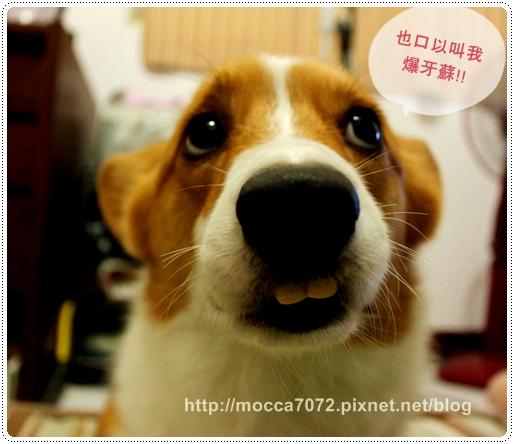
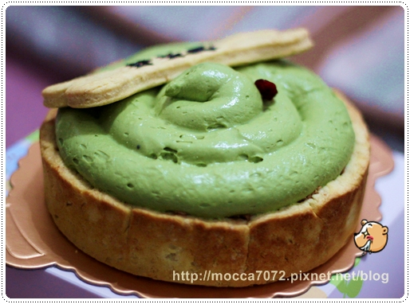
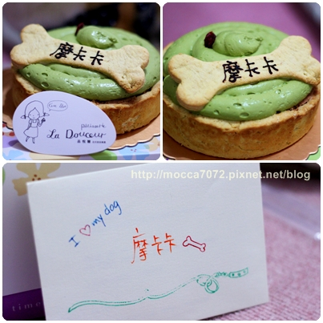
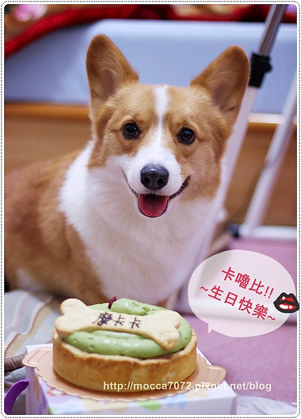
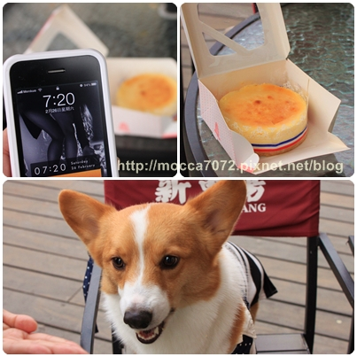
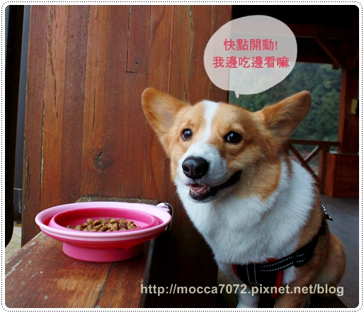
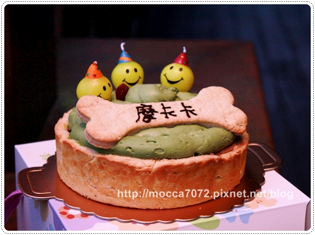
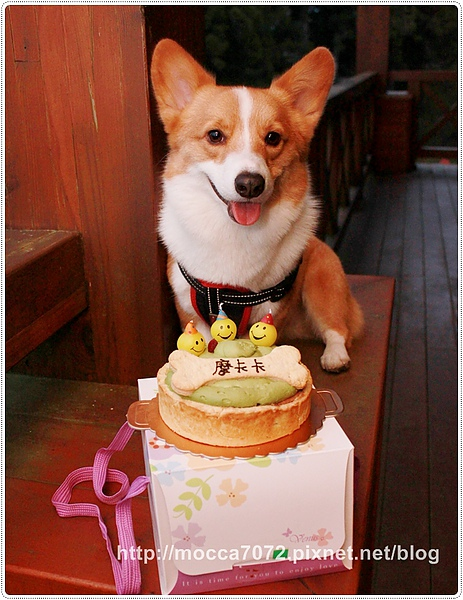
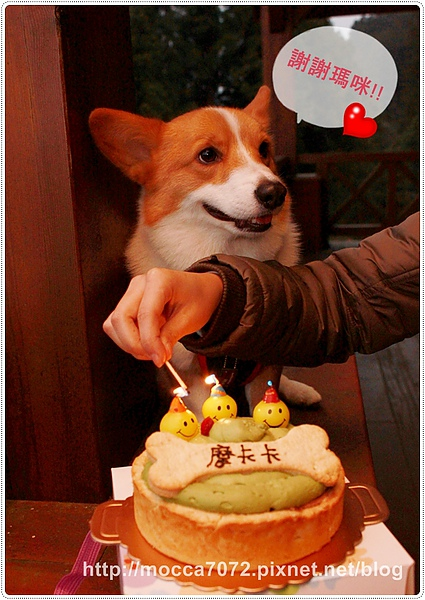

０３０３ 生日快樂！ 摩卡卡３歲嘍！
我的小寶貝摩卡卡~摩肥卡~小G腿~阿ㄌㄩㄝ~卡嚕比(最近愛叫這款 )
)
跟老木生活了3年，名字大概有上百個吧！哈哈哈
這可不是亂叫的，卡卡是真的聽的懂我在叫他吶！？

不過今年來不及到GOBAR慶生，因為狗吧真的被我炸了！？
去年2歲生日慶生實況請點－－＞【GOBAR大酒店】摩卡卡切蛋糕！
應該沒忘記本人去年的傑作吧!!XDDDD
(爸特~Gobar在今年的228已經正式結束營業嘍! >///<)

剛好今年生日前夕要跟卡內家衝阿里山三天二夜
說什麼也不能放過這個好機會，請店家幫忙趕工訂蛋糕
我要把"狗屎" 扛上山開趴踢啦！！
說到"愛呷塞"的兩位前輩，不得不提到雙寶包啦！XDDD
媽寶包：我跟我娘一樣"必結"，最近屎缺貨，很久沒吃啦！
醬寶包：我現在當姐結惹～不吃屎很久啦！

這是在GO GREEN訂的"狗吃屎"生日蛋糕！狗吃屎這名兒太有趣啦！
很謝謝店家願意幫我趕工出爐！趕時間的人可選擇到品悅糖自取
蛋糕成份:日本抺茶.卡夫起司.燕麥.無糖粟子泥.芭娜娜.蘉越莓
(卡內麻！我就說這人可以吃嘛！！ )
)

很怕在扛上山的過程，讓狗屎糕遭遇到不測，所以先打開在家拍幾張！
（常來的捧油應該知道，在本府什麼事都有可能發生，所以一定要做好萬全準備！XD ）
訂了8吋，看起來不算大，但它一整個很紮實很有份量！

出發當天在清水休息站停留，卡內麻也準備了個小蛋糕要幫卡卡慶生！
真的是愈來愈有默契了我們！ 
聽說這小蛋糕出自手巧的財寶麻之手！糾厚呷ㄟ～～

話說七早八早就慶生還真的是頭一遭，早餐都還沒消化完咧！哈哈
但小鬼只要有得吃就好也，完全沒差！

猛哥亂七八糟拍了這張，剛好所有人都入鏡，
看了老半天，發現這照片頗有一碗麵故事的fu！ 哈哈哈
哈哈哈
倒是我一個人像神經病一樣在旁邊幹嘛我也不知，我真的病的不輕了！？ 

到了阿里山，連吃個晚餐都要這嘛浪漫！
把摩卡卡的飯飯拿到火車站邊吃邊欣賞美景

因為等等馬上就有狗屎糕可以吃嘍！所以這晚餐看起來份量是有點少 XD
老木我控制他的食量比控制自己的認真非常非常非常的多！

一喊開動，猛嗑的摩小子！美景與美食當前，當然選食物啊～

趴踢開始！可愛的微笑蠟燭是卡內麻從加拿大帶回來的禮物！！
本人蠟燭玩癮惹～現在到處收集可愛簇咪的蠟燭～哈哈哈
放在狗吃屎上面一整個很搭！！

我的可愛小壽星超開心的哇！不枉費老木扛了蛋糕上山！
南部的大太陽，搞得我們超怕狗吃屎熱到變成－－＞落塞 

謝謝寶貝三年的陪伴，沒有你我們的生活不會這嘛豐富有趣！
瑪麻的北七行為也不會被眾人發現！

不過可可年的卡ㄋㄟ一整個恐燭症復發，躲的超遠的！糾摳蓮～
以後慶生都要帶著安定背心才行啦！

兒子被蠟燭嚇的逃得千里遠，麻麻居然還遭受霸凌！？

因為卡內拔率先吃了狗吃屎上面的"那陀屎" 後，突然喊出一聲好噁心哦！
接著我跟猛哥也吃了"那陀屎" ，雙雙吐了出來！！哈哈哈
卡內麻看著我們三個詭異的表情笑到翻掉，所以我只好逼她一起嚐鮮啦！

結果居然難吃到讓她哭了出來！？
（其實這位太太是因為看到我們三個的表情，笑到流淚啦！ )
)
我說那陀屎不是難吃，它是詭異，不過卡內麻吃了倒覺得還好，說就像沒有味道的起司！
還好兩個小朋友非常捧場，以秒殺的速度嗑了蛋糕！
我只能說呷塞不是人人都有天份的！？哈哈哈～媽寶會長！我崇拜泥～～

今年的生日過得也很特別，也只有我這人來瘋的才會傻了扛蛋糕上山！哈哈
我的小寶貝，雖然你根本也不知道去了那裡過生日
但看到你開心的笑容，我真的覺得很滿足！
這張照片你看著瑪麻的眼神，我覺得好像在跟我說：瑪咪～謝謝你！我很開心
自己就莫名感動的亂七八糟的～ 
但我相信你覺得幸福，因為我給了你百分之百的愛！（猛哥分到只有屑屑！？）
也謝謝你又平安健康的陪了我們一年 
小天兵～～ｉｌｏｖｅ ｕ ｓｏ ｍｕｃｈ～

雖然最近我都獨享摩卡卡的可愛！！哈哈哈
但一年一次的生日，再怎嘛懶也要好好的生出文留念一下啦！
今年一樣希望大家的寶貝都跟摩卡卡一樣健健康康，平安長大呦！